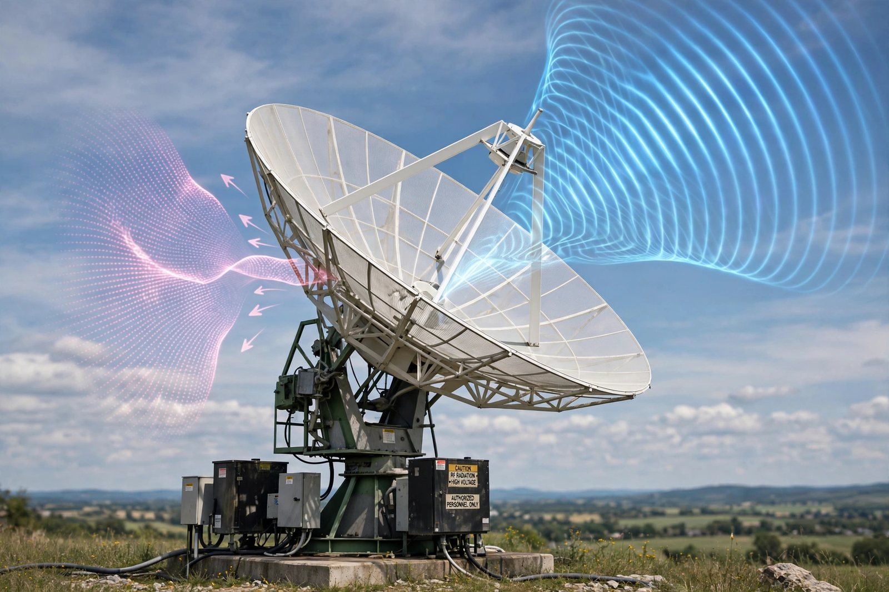

Microwave
Microwave is a form of electromagnetic radiation with wavelengths from about one metre to one millimetre, corresponding to frequencies between 300 MHz and 300 GHz. In the electromagnetic spectrum, microwaves fall between infrared radiation and radio waves. Different sources define the boundaries differently, but the range is broadly shared with the super high frequency (SHF) band.

| Microwave | |
|---|---|
| Frequency range | 300 MHz – 300 GHz |
| Wavelength range | 1 m – 1 mm |
| Band | SHF (and part of UHF/EHF) |
Properties
Microwaves travel by line of sight and, unlike lower-frequency radio waves, are not reflected by the ionosphere, so microwave communication links require repeater stations or satellites. They are absorbed by water, fats, and sugars — the principle behind the microwave oven, which typically operates at 2.45 GHz — and by gases in the atmosphere at certain resonant frequencies, which limits some bands while making others useful for spectroscopy and remote sensing.
Applications
Microwaves are central to modern communications: satellite links, terrestrial point-to-point relays, wireless networking (Wi-Fi), Bluetooth, and mobile phone networks all use microwave frequencies. Radar, developed rapidly during the Second World War using the cavity magnetron, remains a major application, as do radio astronomy, GPS, and heating processes ranging from domestic ovens to industrial drying. The cosmic microwave background — faint microwave radiation filling the universe — is a key piece of evidence for the Big Bang.
History
The existence of electromagnetic waves was predicted by James Clerk Maxwell in 1864 and demonstrated by Heinrich Hertz in 1888. Experiments with centimetre waves were carried out in the 1890s by Jagadish Chandra Bose. Practical microwave technology matured in the 1930s and 1940s with the klystron and the cavity magnetron, the latter developed in Britain in 1940 and central to Allied radar.